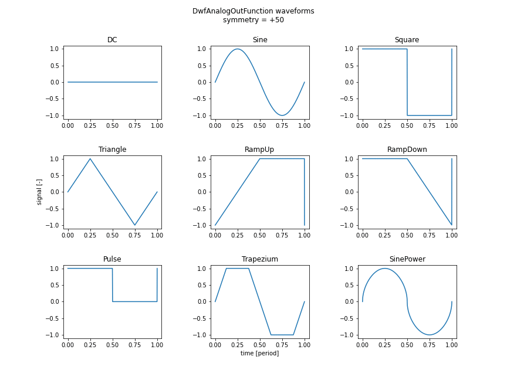

pydwf enumeration types
Throughout pydwf, enumeration types are used as parameters or return values. They are generally used when a parameter or return value can take on a small number of specific values.
Using the pydwf enumeration types
The enumeration types are defined in the pydwf.core.auxiliary.enum_types module. They are Python equivalents of the 27 enumerations defined in the dwf.h header file provided by Digilent.
- Note:
pydwf does not replicate the obsolete enumerations TRIGCOND and STS that are defined in the C header file. TRIGCOND has been replaced by
DwfTriggerSlope; STS has been replaced byDwfState.
The definitions in the header file do not use C enum types, but rather use a typedef to define a type name that is an alias for either int or unsigned char, followed by a number of constant declarations. For example:
// instrument states:
typedef unsigned char DwfState;
const DwfState DwfStateReady = 0;
const DwfState DwfStateConfig = 4;
const DwfState DwfStatePrefill = 5;
const DwfState DwfStateArmed = 1;
const DwfState DwfStateWait = 7;
const DwfState DwfStateTriggered = 3;
const DwfState DwfStateRunning = 3;
const DwfState DwfStateDone = 2;
The enumeration type names in the C library are a mix between different naming styles. For reasons of consistently, we decided to rename the types in pydwf; the table below shows the correspondence between C and Python names.
libdwf name |
pydwf name |
used by |
DWFERC |
|
|
ENUMFILTER |
||
DwfEnumConfigInfo |
|
|
DEVID |
|
|
DEVVER |
|
|
DwfParam |
DwfLibrary, DwfDevice methods |
|
DwfWindow |
DwfLibrary methods |
|
DwfState |
all 4 main instruments; AnalogImpedance |
|
TRIGSRC |
all 4 main instruments; DeviceControl |
|
DwfTriggerSlope |
all 4 main instruments |
|
ACQMODE |
AnalogIn and DigitalIn instruments |
|
FILTER |
AnalogIn instrument |
|
DwfAnalogCoupling |
AnalogIn instrument |
|
TRIGTYPE |
AnalogIn instrument |
|
TRIGLEN |
AnalogIn instrument |
|
FUNC |
AnalogOut instrument |
|
AnalogOutNode |
AnalogOut instrument |
|
DwfAnalogOutMode |
AnalogOut instrument |
|
DwfAnalogOutIdle |
AnalogOut instrument |
|
DwfDigitalInClockSource |
DigitalIn instrument |
|
DwfDigitalInSampleMode |
DigitalIn instrument |
|
DwfDigitalOutOutput |
DigitalOut instrument |
|
DwfDigitalOutType |
DigitalOut instrument |
|
DwfDigitalOutIdle |
DigitalOut instrument, ProtocolSPI support |
|
ANALOGIO |
AnalogIO functionality |
|
DwfAnalogImpedance |
||
DwfDmm |
not currently used |
Note
The DwfDmm type is defined, but not yet used by any API. It appears to be geared towards support for DMM functionality offered by the ADP 5250 device.
The top-level pydwf package imports the enumeration types from pydwf.core.auxiliary.enum_types to make them available to user scripts. To use these types, you should import the ones you need from the top-level pydwf package:
# Here, we import all 27 pydwf enumeration types.
# In practical scripts, only a few of these will be imported.
from pydwf import (DwfErrorCode, DwfEnumFilter, DwfEnumConfigInfo, DwfDeviceID,
DwfDeviceVersion, DwfDeviceParameter, DwfWindow, DwfState,
DwfTriggerSource, DwfTriggerSlope, DwfAcquisitionMode,
DwfAnalogInFilter, DwfAnalogCoupling, DwfAnalogInTriggerType,
DwfAnalogInTriggerLengthCondition, DwfAnalogOutFunction,
DwfAnalogOutNode, DwfAnalogOutMode, DwfAnalogOutIdle,
DwfDigitalInClockSource, DwfDigitalInSampleMode,
DwfDigitalOutOutput, DwfDigitalOutType, DwfDigitalOutIdle,
DwfAnalogIO, DwfAnalogImpedance, DwfDmm)
pydwf enumeration classes reference
- class DwfErrorCode
Enumeration type for error reporting constants of the DWF API.
This type is used by the
DwfLibrary.getLastError()method to report the error condition of the most recent C API call.In pydwf, it is only used as the type of the
codefield ofDwfLibraryErrorinstances.In the C API, this type is called ‘DWFERC’, and it is represented as an int.
- NoErc = 0
No error occurred.
- UnknownError = 1
Call waiting on pending API time out.
- ApiLockTimeout = 2
Call waiting on pending API time out.
- AlreadyOpened = 3
Device already opened.
- NotSupported = 4
Device not supported.
- InvalidParameter0 = 16
Invalid parameter sent in API call.
- InvalidParameter1 = 17
Invalid parameter sent in API call.
- InvalidParameter2 = 18
Invalid parameter sent in API call.
- InvalidParameter3 = 19
Invalid parameter sent in API call.
- InvalidParameter4 = 20
Invalid parameter sent in API call.
Note
This value is not listed in the most recent version of the documentation.
- class DwfEnumFilter
Enumeration type for device class constants, used during device enumeration.
This type is used by the
DeviceEnum.enumerateDevices()andDeviceEnum.enumerateStart()methods to constrain the type of devices that will be enumerated.In the C API, this type is called ‘ENUMFILTER’, and it is represented as an int.
- All = 0
Enumerate all available devices.
- DEVID = 1
Use devic to filter specific devices.
- Type = 134217728
Use filters below (0x08000000).
- USB = 1
Enumerate USB devices.
- Network = 2
Enumerate Network devices.
- AXI = 4
Enumerate embedded devices (used when running on an ADP 3x50 device).
- Remote = 16777216
Enumerate remote table devices (0x01000000).
- Audio = 33554432
Enumerate sound card devicess (0x02000000).
- Demo = 67108864
Enumerate demo devices (0x04000000).
- class DwfEnumConfigInfo
Enumeration type for device configuration parameter type constants.
This type lists the device parameters that can vary between different device configurations of the same device. It is used exclusively by the
DeviceEnum.configInfo()method.In the C API, this type is represented as an int.
- TooltipText = -1
Tooltip text.
Maximum length: 2048 characters.
Note
This value is not officially documented. Its existence was revealed in a message on the Digilent forum.
- OtherInfoText = -2
Other info text.
Maximum length: 256 characters.
Note
This value is not officially documented. Its existence was revealed in a message on the Digilent forum.
- AnalogInChannelCount = 1
Number of analog input channels.
- AnalogOutChannelCount = 2
Number of analog output channels.
- AnalogIOChannelCount = 3
Number of analog power supply channels.
Note
This is a different number than the number of channels reported by the
AnalogIO.channelCount()method.
- DigitalInChannelCount = 4
Number of digital input channels.
- DigitalOutChannelCount = 5
Number of digital output channels.
- DigitalIOChannelCount = 6
Number of digital I/O channels.
- AnalogInBufferSize = 7
Analog in buffer size, in samples.
- AnalogOutBufferSize = 8
Analog out buffer size, in samples.
- DigitalInBufferSize = 9
Digital in buffer size, in samples.
- DigitalOutBufferSize = 10
Digital out buffer size, in samples.
- class DwfDeviceID
Enumeration type for device ID constants.
This type is used by the
DeviceEnum.deviceType()method to report the type of a previously enumerated device.In the C API, this type is called ‘DEVID’, and it is represented as an int.
- EExplorer = 1
Electronics Explorer devices.
- Discovery = 2
Analog Discovery (1) devices.
- Discovery2 = 3
Analog Discovery 2 devices.
- DDiscovery = 4
Digital Discovery devices.
- ADP3X50 = 6
Analog Discovery Pro devices.
- Eclypse = 7
Eclypse devices.
- ADP5250 = 8
ADP5250 devices.
- DPS3340 = 9
DPS 3340 devices.
- class DwfDeviceVersion
Enumeration type for device version (i.e., hardware revision) constants.
This type is used by the
DeviceEnum.deviceType()method to report the hardware revision of a previously enumerated device.Note
The device revision list given here is not complete; it does not cover all devices.
In the C API, this type is called ‘DEVVER’, and it is represented as an int.
- EExplorerC = 2
Electronics Explorer devices, revision C.
- EExplorerE = 4
Electronics Explorer devices, revision E.
- EExplorerF = 5
Electronics Explorer devices, revision F.
- DiscoveryA = 1
Discovery devices, revision A.
- DiscoveryB = 2
Discovery devices, revision B.
- DiscoveryC = 3
Discovery devices, revision C.
- class DwfDeviceParameter
Enumeration type for device parameter constants.
Device parameters are miscellaneous integer settings that influence the behavior of a device.
The different device parameters are selected by one of the constant values defined here.
This type is used to select device parameters, either to set/get global defaults using the DwfLibrary, or to to set/get parameter values on a specific, previously opened device DwfDevice.
In the C API, this type is called ‘DwfParam’, and it is represented as an int.
- KeepOnClose = 1
Keep the device running after close.
Warning
This value is obsolete. Use OnClose instead.
Note
This value is not listed in the most recent version of the documentation.
- UsbPower = 2
USB power behavior if AUX power is connected.
Possible values:
0 — Disable USB power.
1 — Keep USB power enabled.
This setting is implemented on the Analog Discovery 2.
Note
This value is not listed in the most recent version of the documentation.
- LedBrightness = 3
Set multicolor LED brightness.
The Digital Discovery features a multi-color LED. It is normally blue in case the device is not currently controlled by software, or green if it is.
Setting this parameter from 0 to 100 changes the LED’s relative brightness, in percents. This can be useful, for example, in a lab with sensitive optics that would preferably be completely dark.
On the Analog Discovery 2, this setting has no effect.
- OnClose = 4
Define behavior on close.
Possible values:
0 — On close, continue.
1 — On close, stop the device outputs but keep the device operational to prevent temperature drifts.
2 — On close, shut down the device to minimize power consumption.
- AudioOut = 5
Enable or disable audio output.
Possible values:
0 — Disable audio output.
1 — Enable audio output (default).
This setting is implemented on the Analog Discovery and the Analog Discovery 2.
- UsbLimit = 6
USB power limit.
The value ranges from 0 to 1000, in mA. The value -1 denotes no limit. Recommended value is in the 600—1000 mA range.
This setting is implemented on the Analog Discovery and the Analog Discovery 2.
- AnalogOut = 7
Enable or disable analog output.
Possible values:
0 — Disable analog output.
1 — Enable analog output.
This setting is implemented on the Analog Discovery Pro 3x50.
- Frequency = 8
100 MHz.
This setting is implemented on the Digital Discovery and Analog Discovery Pro 3x50.
- Type:
Adjust system frequency in Hz. Default
- ExtFreq = 9
10 MHz.
This setting is implemented on the Analog Discovery Pro 3x50.
- Type:
Specify for input or set reference output frequency in Hz. Default
- ClockMode = 10
This parameter is undocumented.
Todo
The meaning of this parameter needs to be understood.
Possible values:
0 — Use internal oscillator (default).
1 — Enable reference output on trigger-1 channel.
2 — Use reference input from trigger-1 channel.
3 — Use trigger-1 as reference I/O.
This setting is implemented on the Analog Discovery Pro 3x50.
- TempLimit = 11
Specify the over temperature threshold in degree Celcius on devices which support such option.
Todo
The meaning of this parameter needs to be understood.
- FreqPhase = 12
Specify the system clock phase which is useful for device synchronization when a reference input clock is used.
Todo
The meaning of this parameter needs to be understood.
- class DwfWindow
Enumeration type for signal processing windows.
- Rectangular = 0
Rectangular window, a.k.a. no window.
- Triangular = 1
Triangular window.
- Hamming = 2
Hamming window.
- Hann = 3
Hann window.
- Cosine = 4
Cosine window.
- BlackmanHarris = 5
Blackman-Harris window.
- FlatTop = 6
Flat-top window.
- Kaiser = 7
Kaiser window.
- class DwfState
Enumeration type for instrument state constants, for instruments that are controlled by an internal state-machine.
The following instrument APIs are controlled by a state machine:
AnalogIn
AnalogOut — independent state machine for each channel
DigitalIn
DigitalOut
AnalogImpedance
This type is used to return the current state from their status() methods:
AnalogIn.status(),AnalogOut.status(),DigitalIn.status(),DigitalOut.status(), andAnalogImpedance.status().Note
The enumeration values
TriggeredandRunninghave identical integer values (3).The state name
Triggeredis used for capture instruments (AnalogIn, DigitalIn), whileRunningis used for signal generation instruments (AnalogOut, DigitalOut).In the C API, this type is represented as an unsigned char.
- Ready = 0
The instrument is idle, waiting to be configured or started.
- Config = 4
The instrument is being configured.
- Prefill = 5
The instrument is collecting data prior to arming itself, so it can deliver pre-trigger samples.
- Armed = 1
The instrument is collecting samples and waiting for the trigger.
- Wait = 7
The signal generation instrument is waiting before its next run.
- Triggered = 3
The capture instrument is triggered and collecting data.
- Running = 3
The signal generation instrument is running (generating signals).
- Done = 2
The instrument has completed a measurement or signal-generating sequence.
- class DwfTriggerSource
Enumeration type for trigger source constants.
This type is used by the DeviceControl functionality to configure an external trigger and by the AnalogIn, AnalogOut, DigitalIn, and DigitalOut instruments to select a trigger source. The AnalogIn instrument can also use this type to configure a trigger as a sampling source.
In the C API, this type is called ‘TRIGSRC’, and it is represented as an unsigned char.
- None_ = 0
No trigger configured (device starts immediately).
The trigger pin is high impedance (input). This is the default setting.
- PC = 1
PC (software) trigger. This can be used, for example, to synchronously start multiple instruments.
- DetectorAnalogIn = 2
AnalogIn trigger detector.
- DetectorDigitalIn = 3
DigitalIn trigger detector.
- AnalogIn = 4
AnalogIn instrument trigger. The trigger level is high when the instrument is running.
- DigitalIn = 5
DigitalIn instrument trigger. The trigger level is high when the instrument is running.
- DigitalOut = 6
DigitalOut instrument trigger. The trigger level is high when the instrument is running.
- AnalogOut1 = 7
AnalogOut instrument trigger 1 start. The trigger level is high when the instrument is running.
- AnalogOut2 = 8
AnalogOut instrument trigger 2 start. The trigger level is high when the instrument is running.
- AnalogOut3 = 9
AnalogOut instrument trigger 3 start. The trigger level is high when the instrument is running.
- AnalogOut4 = 10
AnalogOut instrument trigger 4 start. The trigger level is high when the instrument is running
- External1 = 11
External trigger signal #1.
- External2 = 12
External trigger signal #2.
- External3 = 13
External trigger signal #3.
- External4 = 14
External trigger signal #4.
- High = 15
High (undocumented).
- Low = 16
Low (undocumented).
- Clock = 17
Clock (undocumented).
- class DwfTriggerSlope
Enumeration type for trigger slope constants.
This type is used by the AnalogIn, AnalogOut, DigitalIn, and DigitalOut instruments to select the trigger slope.
In addition, the AnalogIn instrument uses it to select the slope of the sampling clock.
In the C API, this type is represented as an int.
- Rise = 0
Rising trigger slope.
- Fall = 1
Falling trigger slope.
- Either = 2
Either rising or falling trigger slope.
- class DwfAcquisitionMode
Enumeration type for acquisition mode constants.
This type is used by the AnalogIn and DigitalIn instruments. These instruments support multiple acquisition modes that are appropriate for different data acquisition tasks.
In the C API, this type is called ‘ACQMODE’, and it is represented as an int.
- Single = 0
Perform a single buffer acquisition.
Re-arm the instrument for the next capture after the data is fetched to the host using the instrument-specific status() method:
AnalogIn.status()orDigitalIn.status().Note
The difference with the
Single1mode is unclear.
- ScanShift = 1
Perform a continuous acquisition in FIFO style.
The trigger setting is ignored.
The last sample is at the end of the buffer. The instrument’s statusSamplesValid() method gives the number of the acquired samples, which will increase until reaching the buffer size. After that, the waveform image is shifted for every new sample.
- ScanScreen = 2
Perform continuous acquisition, circularly writing samples into the buffer.
This is similar to a heart-monitor display.
The trigger setting is ignored.
The instrument’s statusIndexWrite() method gives the buffer write position.
- Record = 3
Perform acquisition for the length of time set by the instrument’s recordLengthSet() method.
- Overs = 4
Overscan mode.
Note
This value is not listed in the most recent version of the documentation.
- class DwfAnalogInFilter
Enumeration type for analog input filter constants.
This type is used by the AnalogIn instrument to select a filtering algorithm for the input and trigger channels.
The AnalogIn instrument’s ADC always captures samples at the maximum possible rate. If data acquisition at a lower sampling rate is requested, the resampling can be handled in several different ways.
The most obvious choice is averaging. This will suppress high-frequency noise, which is often a good thing, but sometimes it is desirable to know that high-frequency noise is present in the signal, and the averaging may hide that fact.
For that reason, the decimation filter is available, which simply selects a single sample captured at high frequency when resampling to a lower frequency. The signal-to-noise ratio (SNR) will suffer, but the presence of high-frequency noise (outliers) will be more easily seen in the resampled data.
Todo
Examine the MinMax filter choice; it is not currently understood.
In the C API, this type is called ‘FILTER’, and it is represented as an int.
- Decimate = 0
Decimation filter. Store every N’th ADC conversion, where N = ADC frequency / acquisition frequency.
- Average = 1
Averaging filter. Store the average of N ADC conversions.
- MinMax = 2
Min/max filter. Store, interleaved, the minimum and maximum values, of 2 * N concersions.
- AverageFit = 3
Averaging fit filter.
Note
This value is not listed in the most recent version of the documentation.
- class DwfAnalogCoupling
Enumeration type for analog coupling configuration.
- DC = 0
DC coupling.
- AC = 1
AC coupling.
- class DwfAnalogInTriggerType
Enumeration type for analog input trigger mode constants.
This type is used by the AnalogIn instrument to specify the trigger type.
In the C API, this type is called ‘TRIGTYPE’, and it is represented as an int.
- Edge = 0
Edge trigger type.
- Pulse = 1
Pulse trigger type.
- Transition = 2
Transition trigger type.
- Window = 3
Window trigger type.
- class DwfAnalogInTriggerLengthCondition
Enumeration type for analog input trigger length condition constants.
This type is used by the AnalogIn instrument to specify the trigger length condition.
In the C API, this type is called ‘TRIGLEN’, and it is represented as an int.
- Less = 0
Trigger length condition ‘less’.
- Timeout = 1
Trigger length condition ‘timeout’.
- More = 2
Trigger length condition ‘more’.
- class DwfAnalogOutFunction
Enumeration type for analog output waveform-shape function constants.
This type is used by the AnalogOut instrument to represent the wave-shape produced on an analog output channel node. The nine fixed waveform shape options are shown below.
In the C API, this type is called ‘FUNC’, and it is represented as an unsigned char.
- DC = 0
DC (constant signal) waveform shape. The signal level varies between -1 and 1.
- Sine = 1
Sinusoid waveform shape. The signal level varies between -1 and 1.
- Square = 2
Square waveform shape. The signal level varies between -1 and 1.
- Triangle = 3
Triangle waveform shape. The signal level varies between -1 and 1.
- RampUp = 4
Ramp Up waveform shape. The signal level varies between -1 and 1.
- RampDown = 5
Ramp Down waveform shape. The signal level varies between -1 and 1.
- Noise = 6
Noise waveform shape. The signal level is uniformly distributed between -1 and 1.
- Pulse = 7
Pulse waveform shape. The signal level varies between 0 and 1.
- Trapezium = 8
Trapezium waveform shape. The signal level varies between -1 and 1.
- SinePower = 9
Sinusoid Power waveform shape. The signal level varies between -1 and 1.
- CustomPattern = 28
Generate waveform from custom samples.
It provides constant sample rate, supporting integer divisions of the system frequency.
Note
This description is taken verbatim from the documentation (dwfsdk.pdf). It is unclear what it means.
- PlayPattern = 29
Generate waveform in stream play style. It provides constant sample rate.
Note
This description is taken verbatim from the documentation (dwfsdk.pdf). It is unclear what it means.
- Custom = 30
Generate waveform from custom samples.
Optimizes for average requested frequency, sample output lengths may vary by one system frequency period.
Note
This description is taken verbatim from the documentation (dwfsdk.pdf). It is unclear what it means.
- Play = 31
Generate waveform in stream play style. Optimizes for average requested frequency.
Note
This description is taken verbatim from the documentation (dwfsdk.pdf). It is unclear what it means.
- class DwfAnalogOutNode
Enumeration type for analog output node type constants.
This type is used by the AnalogOut instrument to represent the node types associated with each output channel.
In the C API, this type is called ‘AnalogOutNode’ (without the Dwf prefix), and it is represented as an int.
- Carrier = 0
Carrier signal node. This node represents the base signal without modulation applied.
- FM = 1
Frequency Modulation node. (Frequency or Phase modulation, according to the latest documentation).
- AM = 2
Amplitude Modulation node. (Amplitude or Sum modulation, according to the latest documentation).
- class DwfAnalogOutMode
Enumeration type for analog out mode constants (voltage or current).
This type is used by the AnalogOut instrument to set or retrieve the mode of a channel.
In the C API, this type is represented as an int.
- Voltage = 0
Voltage mode.
- Current = 1
Current mode.
- class DwfAnalogOutIdle
Enumeration type for analog output idle state constants.
This type is used by the AnalogOut instrument to set the idle behavior of an output channel.
In the C API, this type is represented as an int.
- Disable = 0
When idle, disable the output.
- Offset = 1
When idle, drive the configured analog output offset.
- Initial = 2
When idle, drive the initial value of the selected waveform shape.
- class DwfDigitalInClockSource
Enumeration type for digital input clock source constants.
This type is used by the DigitalIn instrument to specify a clock source.
In the C API, this type is represented as an int.
- Internal = 0
Use internal clock source.
- External = 1
Use external clock source.
- External2 = 2
Use alternate external clock source.
- class DwfDigitalInSampleMode
Enumeration type for digital input sample mode constants.
This type is used by the DigitalIn instrument to specify a sample mode.
In the C API, this type is represented as an int.
- Simple = 0
Only digital samples (no noise).
- Noise = 1
Alternate samples (noise, sample, noise, sample, …) where noise is more than one transition between two samples.
This setting is available when the sample rate is less than the maximum clock frequency (i.e., the divider is greater than one). Digital noise means more than one transition between subsequent samples was detected; this can indicate glitches or ringing.
- class DwfDigitalOutOutput
Enumeration type for digital output mode constants.
This type is used by the DigitalOut instrument to specify the electronic behavior of a digital output channel.
In the C API, this type is represented as an int.
- PushPull = 0
Push/Pull.
- OpenDrain = 1
Open Drain.
- OpenSource = 2
Open Source.
- ThreeState = 3
Tristate (for custom and random).
- class DwfDigitalOutType
Enumeration type for digital output type constants.
This type is used by the DigitalOut instrument to specify the behavior mode of a digital output channel.
In the C API, this type is represented as an int.
- Pulse = 0
Pulse output.
- Custom = 1
Custom output.
- Random = 2
Random output.
- ROM = 3
ROM (lookup table) output.
- State = 4
State machine output.
- Play = 5
Continuous playback output.
- class DwfDigitalOutIdle
Enumeration type for digital output idle mode constants.
This type is used primarily by the DigitalOut instrument to specify the idle behavior mode of a digital output channel.
In addition to that, it is used by the ProtocolSPI functionality to specify the idle behavior of the pins it controls.
In the C API, this type is represented as an int.
- Init = 0
Same as initial value of selected output pattern.
- Low = 1
Low signal level.
- High = 2
High signal level.
- Zet = 3
High impedance.
- class DwfAnalogIO
Enumeration type for Analog I/O channel node type constants.
This type is used by the AnalogIO functionality to report the node type.
In the C API, this type is called ‘ANALOGIO’, and it is represented as an unsigned char.
- Undocumented = 0
This value was returned in Analog Discovery Pro devices when using 3.16.3 of the DWF library. This was a bug that was subsequently fixed.
- Enable = 1
The node represent an on/off switch.
- Voltage = 2
The node represents a voltage.
- Current = 3
The node represents a current.
- Power = 4
The node represents a power.
- Temperature = 5
The node represents a temperature.
- Dmm = 6
The node represents a DMM (digital multimeter) value.
- Range = 7
The node represents a range.
- Measure = 8
(unknown)
- Time = 9
The node represents a time.
- Frequency = 10
The node represents a frequency.
- Resistance = 11
The node represents a resistance.
- Slew = 12
(unknown)
- class DwfAnalogImpedance
Enumeration type for analog impedance measurement types.
This type is used by the AnalogImpedance measurement functionality to specify a measurement quantity type.
In the C API, this type is represented as an int.
- Impedance = 0
Measure impedance, in Ohms.
- ImpedancePhase = 1
Measure impedance phase, in radians.
- Resistance = 2
Measure resistance, in Ohms.
- Reactance = 3
Measure reactance, in Ohms.
- Admittance = 4
Measure admittance, in Siemens.
- AdmittancePhase = 5
Measure admittance phase, in radians.
- Conductance = 6
Measure conductance, in Siemens.
- Susceptance = 7
Measure susceptance, in Siemens.
- SeriesCapacitance = 8
Measure series capacitance, in Farad.
- ParallelCapacitance = 9
Measure parallel capacitance, in Farad.
- SeriesInductance = 10
Measure series inductance, in Henry.
- ParallelInductance = 11
Measure parallel inductance, in Henry.
- Dissipation = 12
Measure dissipation, as a factor.
- Quality = 13
Measure quality, as a factor.
- Vrms = 14
Measure Vrms, in Volts.
- Vreal = 15
Measure Vreal (real part of complex voltage), in Volts.
- Vimag = 16
Measure Vimag (imaginary part of complex voltage), in Volts.
- Irms = 17
Measure Irms, in Amps.
- Ireal = 18
Measure Ireal (real part of complex current), in Amps.
- Iimag = 19
Measure Iimag (imaginary part of complex current), in Amps.
- class DwfDmm
Enumeration type for DMM (digital multimeter) measurements.
Note
This type is currently unused in the API. It is intended for functionality in the new ADP5250 device.
In the C API, this type is called ‘DwfDmm’, and it is represented as an int.
- Resistance = 1
Resistance measurement.
- Continuity = 2
Continuity measurement.
- Diode = 3
Diode measurement.
- DCVoltage = 4
DC voltage measurement.
- ACVoltage = 5
AC voltage measurement.
- DCCurrent = 6
DC current measurement.
- ACCurrent = 7
AC current measurement.
- DCLowCurrent = 8
DC low current measurement.
- ACLowCurrent = 9
AC low current measurement.
- Temperature = 10
Temperature measurement.